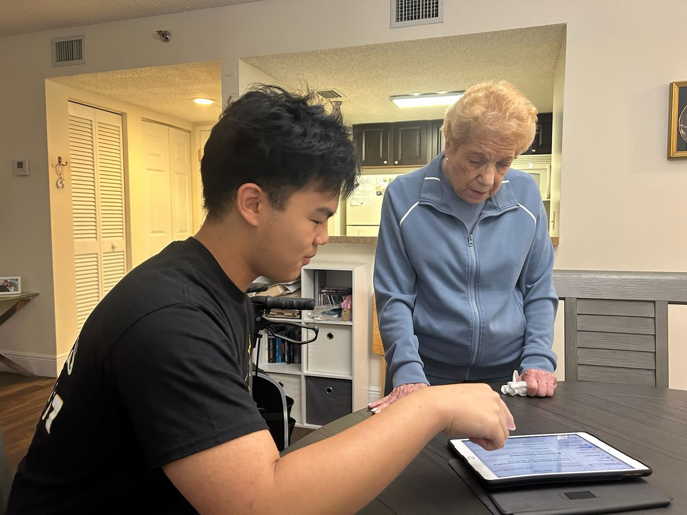
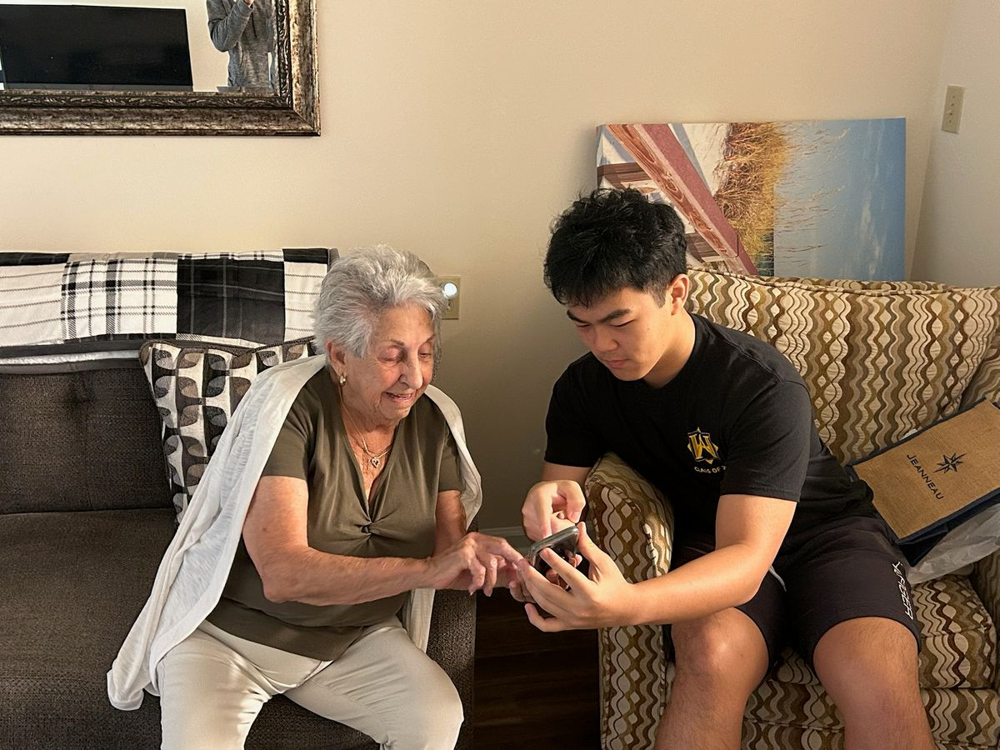
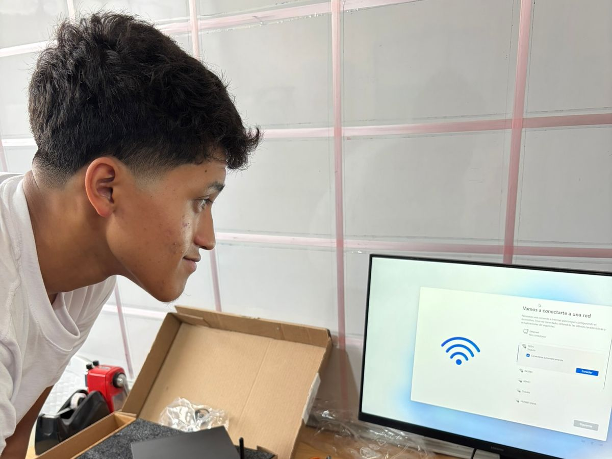
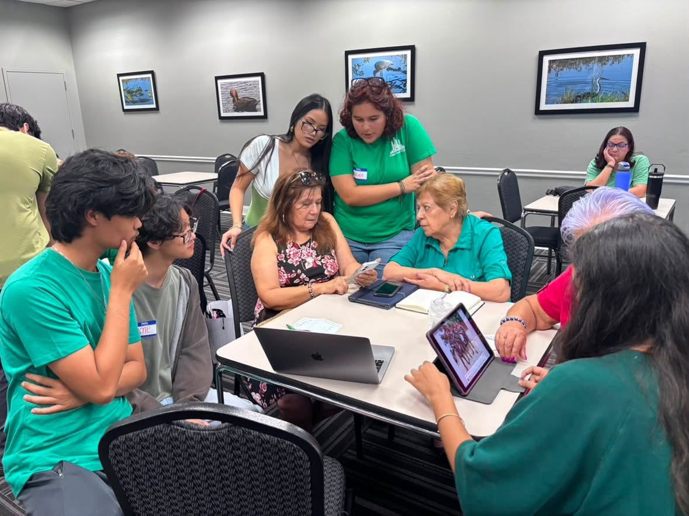

Patience
We meet people where they are and explain technology in plain, supportive steps.
About
Bytes for Better Lives is a student-led nonprofit bridging the digital divide for seniors and children through tech help, digital literacy education, online safety, donations, and responsible chapter growth.
Our Vision
We want seniors to feel confident using technology and children to have access to tools that support learning, creativity, and connection.
Bridge the digital divide with patient tech help, practical education, and donations that reach real community needs.

We focus on patience, safety, and follow-through so every session and donation makes a measurable difference.
Our Values
These values guide how we teach, volunteer, and grow chapters.
We meet people where they are and explain technology in plain, supportive steps.
We prioritize privacy, scam prevention, and online habits that protect families and seniors.
We track impact, communicate clearly with partners, and follow through on commitments.
We train student leaders to run programs responsibly and build chapters with clear standards.
We don’t hand someone a tablet and walk away — we sit with them until it clicks. The BFBL volunteer pledge
5,700+
people served — one patient, in-person session at a time.
3 years
of showing up — weekly sessions, drives, and workshops.
Our Story
BFBL started with hands-on tech help and community donation drives, then expanded into a chapter model so more students can serve their communities with clear status labels.

We began by showing up consistently for seniors who needed help with everyday technology.

We fundraise and donate devices, games, and supplies that support children, families, and partners.

Chapters launch with clear guidance, transparent status, and leadership expectations.